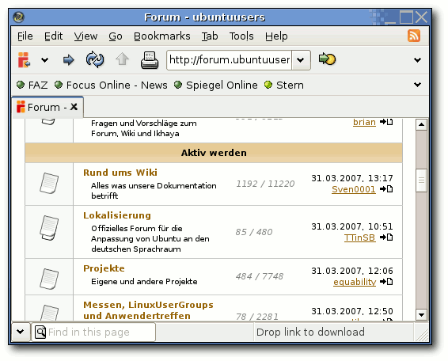
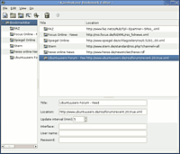

Kazehakase
Archivierte Anleitung
Dieser Artikel wurde archiviert, da er - oder Teile daraus - nur noch unter einer älteren Ubuntu-Version nutzbar ist. Diese Anleitung wird vom Wiki-Team weder auf Richtigkeit überprüft noch anderweitig gepflegt. Zusätzlich wurde der Artikel für weitere Änderungen gesperrt.
Anmerkung: Das Programm ist nur bis einschließlich Ubuntu 8.04 in den offiziellen Paketquellen. Das letzte Major-Release ist von 2009 (Stand: Juni 2011).
Zum Verständnis dieses Artikels sind folgende Seiten hilfreich:
Kazehakase  ist ein kleiner und schlanker Browser, der auf der Gecko-Engine, wie Firefox sie benutzt, basiert. Man kann die Oberfläche und das Verhalten durch zahlreiche Einstellungen recht gut beeinflussen.
ist ein kleiner und schlanker Browser, der auf der Gecko-Engine, wie Firefox sie benutzt, basiert. Man kann die Oberfläche und das Verhalten durch zahlreiche Einstellungen recht gut beeinflussen.
Zu den Besonderheiten gehört die sehr gute RSS-Feed-Integrierung und der externe Editor, sowie Mausgesten und Tastenkürzel. In Zukunft soll zusätzlich eine Funktion eingebaut werden, mit der man zwischen verschiedenen Rendering Engines wie GtkHTML, Dillo oder w3m wechseln kann.
Installation¶
Aus den Paketquellen¶
Kazehakase kann aus den Ubuntu-Quellen installiert werden [1]:
kazehakase (universe)
 mit apturl
mit apturl
Paketliste zum Kopieren:
sudo apt-get install kazehakase
sudo aptitude install kazehakase
Neuste Version kompilieren¶
Wer die neuste Version nutzen möchte, was meistens empfehlenswert ist, da der Browser noch jung ist und wächst, muss ihn sich kompilieren. Dazu müssen neben den unter [3] genannten Paketen noch folgende installiert [1] werden:
firefox-dev
libgtk2.0-dev
libgnutls-dev
Paketliste zum Kopieren:
sudo apt-get install firefox-dev libgtk2.0-dev libgnutls-dev
sudo aptitude install firefox-dev libgtk2.0-dev libgnutls-dev
Hinweis:
Kazehakase wird dabei ohne Ruby-Integration oder Unterstützung für japanische Zeichen kompiliert. Als Browser-Basis wird die Gecko-Engine von Firefox benutzt.
Danach lädt man die neuste Version von der Downloadseite als Archiv herunter und kann das Programm ganz normal kompilieren/installieren [3], wobei ./configure mit der Option --with-gecko-engine=firefox aufgerufen werden muss.
Unter Hardy scheitert unter Umständen das Kommando ./configure --with-gecko-engine=firefox , da die Datei firefox-xpcom fehlt. In diesem Fall muß das Paket
firefox-2-dev
nachinstalliert werden.
Einstellungen¶
Über "Edit -> Preferences..." erreicht man die Einstellungen, deren Aussehen sich ja nach "UI-Level" (User Interface-Level) unterscheidet. Es kann entweder direkt im Menü über "View -> UI-Level" eingestellt werden oder in den Einstellungen unter "General". Es gibt die drei Möglichkeiten "Beginner", "Medium" und "Expert". Die Einstellung hat auch Auswirkungen auf das Menü und die Symbolleiste im Programm. So erhält man im Experten-Modus in der Symbolleiste ganz links ein extra Symbol, mit dem man leichter an die Einstellungen kommt.
Experten-Info:
Im Experten-Modus findet man unter "Edit -> Detailed Preferences" eine weitere Fülle an zusätzlichen Optionen.
Es wird hier nicht näher auf die Einstellungen eingegangen, da sich diese meistens von selbst erklären.
Benutzung¶
Kazehakase kann durch den Aufruf
kazehakase
gestartet werden [2] oder man wählt im GNOME-Menü "Anwendungen -> Internet -> Kazehakase Web Browser".

Es gibt einige Besonderheiten bei dem Browser bzw. bei den Standardeinstellungen:
Seiten werden erst im Hintergrund geladen und dann in einem Rutsch aufgebaut.
Neue Tabs werden nicht am Ende der Tableiste eingefügt, sondern direkt nach dem aktuellen Tab.
Die Tabs werden in der Reihenfolge der Ansicht abgearbeitet (wie bei Opera).
Tabs haben eine feste Breite, im Gegensatz zu Firefox. Zusätzlich werden die Fenster nicht in die Tableiste gequetscht, sondern man erhält links und rechts Scrollpfeile, um an alle geöffneten Seiten zu kommen.
Alle Einstellungen zu den Tabs kann man unter "Edit -> Preferences -> Tab" und "Edit -> Preferences -> Tab -> New Tab" ändern.
Lesezeichen¶

Die Lesezeichen, die man unter "Bookmarks" findet, kann man über "Bookmarks -> Edit bookmarks..." bearbeiten. Um die Lesezeichen in der Lesezeichenleiste zu bearbeiten, klickt man mit der rechten Taste auf die Leiste und wählt "Edit bookmarks..." oder wählt im Menü "Bookmarks -> Edit bookmark bars".
Die Einträge dort sind intuitiv zu handhaben. Ganz oben findet man Icons für die einzelnen neuen Einträge:
"Insert new bookmark" - fügt ein normales Lesezeichen hinzu
"Insert a new folder" - fügt einen kompletten Ordner hinzu
"Insert a new remote bookmark" - fügt einen neuen RSS-Feed hinzu
"Insert a smart new bookmark"
"Insert a separator" - fügt einen Trennstrich bzw. -linie ein
Die Maske mit den einzelnen Einträgen links unten ändert sich je nach Art des Lesezeichens.
RSS-Feed¶
Befindet man sich auf einer Seite mit einem News-Feed, sieht man links oben im Fenster das typische RSS-Icon (siehe Screenshot oben). Mit einem Klick auf das Icon sieht man den Eintrag "Add ... feed to bookmarks", der nach der Auswahl dann auch in der Lesezeichenleiste erscheint.
Mit einem Linksklick auf ein solches Lesezeichen erhält man eine Liste der letzten Nachrichten und kann sich aussuchen, was man lesen möchte. Klickt man auf das grüne Icon vor jedem Eintrag, färbt sich dieses kurz rot und der RSS-Feed wird aktualisiert. Man kann das Intervall aber auch manuell in den Einstellungen zum jeweiligen Feed unter "Update interval" einstellen.
Externer Editor¶
Wenn man auf eine Seite mit einem Texteingabefeld kommt, wie z.B. im Forum beim Erstellen oder Beantworten eines Threads oder im Wiki beim Bearbeiten einer Seite, kann man über Rechtsklick in das Fenster und "Launch Editor" einen externen Editor starten, in dem man den Text dann komfortabler weiter bearbeiten kann. Ist man fertig, die Seite im Editor speichern und diesen schließen. Während der Bearbeitung im Editor bleibt der Browser voll funktionsfähig und kann weiter genutzt werden.
Den benutzten Editor stellt man unter "Edit -> Preferences -> External Program" ein, z.B.
gedit %s
wobei gedit der Editor ist und %s das Argument, das diesem übergeben wird. Das Argument steht für den Inhalt des zu editierenden Textfeldes.
- Erstellt mit Inyoka
-
 2004 – 2017 ubuntuusers.de • Einige Rechte vorbehalten
2004 – 2017 ubuntuusers.de • Einige Rechte vorbehalten
Lizenz • Kontakt • Datenschutz • Impressum • Serverstatus -
Serverhousing gespendet von